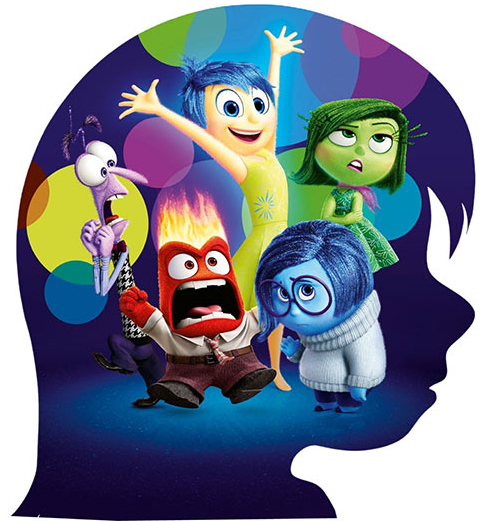

Comunicação assertiva e humanizada
|
 |
É preciso lembrar que nossas equipes são formadas por profissionais que são pessoas, e carregam suas histórias, perfis, expectativas, anseios e angustias diferentes uns dos outros. Para um processo de Gestão de Desempenho Humanizado e Assertivo, se faz necessário aprimorar nossa comunicação no momento do feedback e da avaliação de desempenho para cada membro da equipe. Para isso é necessário que você o conheça bem, para poder ser assertivo. A Comunicação é um ponto extremamente importante para o sucesso da Gestão de Desempenho se considerarmos que a mensagem emitida nem sempre será a recebida pelo colaborador da maneira como o líder planejou. Vamos nos utilizar dos personagens da animação "Divertida Mente" da Disney Pixar para ilustrar alguns perfis e como eles reagem aos feedbacks, assim você pode incluir no seu planejamento a melhor forma de conversar com essa pessoa. |